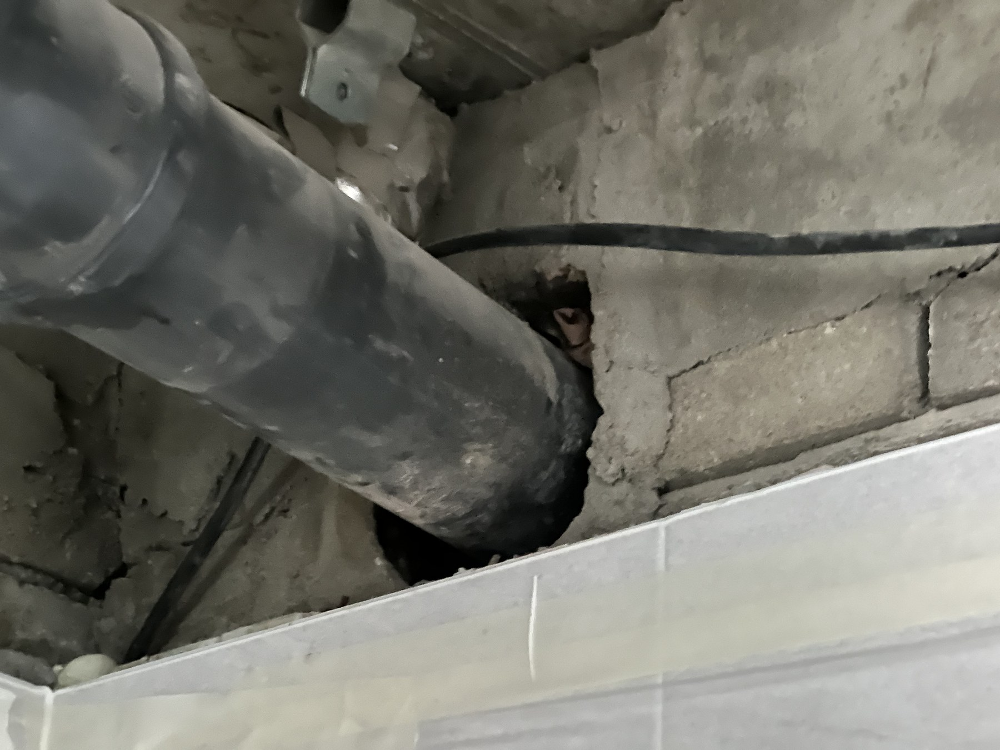
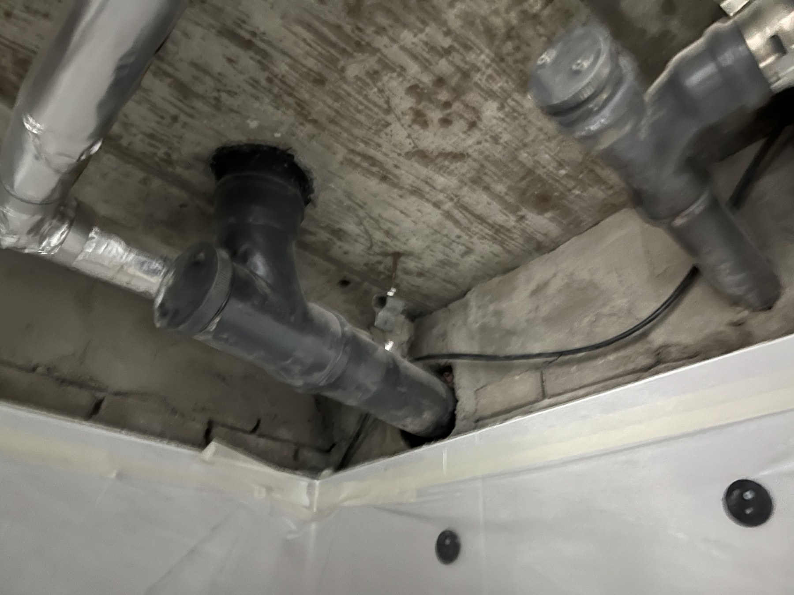
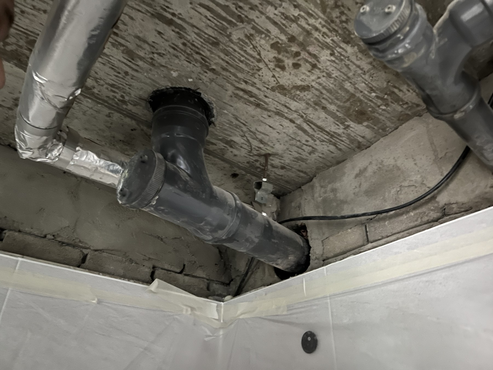
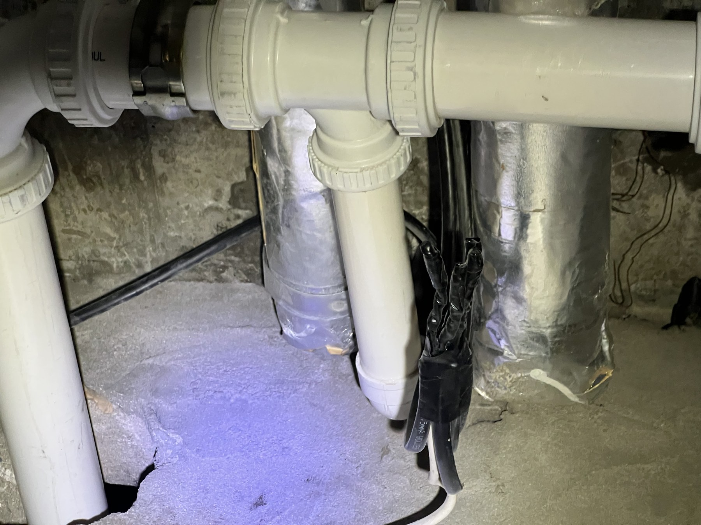
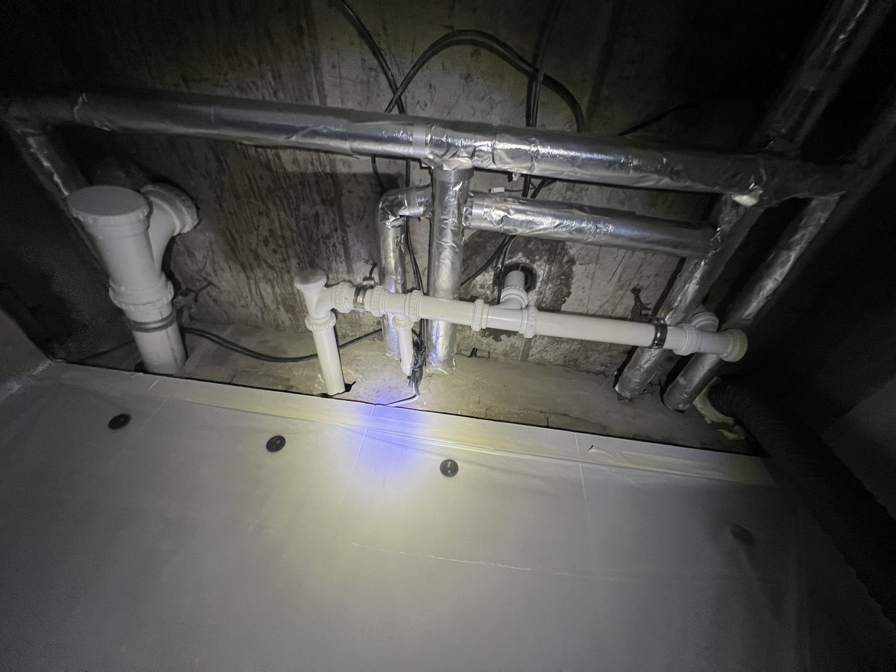

욕실 천장 배관에서 물이 샜습니다 — 대전 삼성아파트 오수관·생활하수 배관 교체

욕실 천장 속 배관 부속에서 물이 새 천장을 열어 확인하고, 오수관과 생활하수 배관을 교체한 현장입니다. 통수시험까지 마치는 데 2시간 걸렸습니다.
어떤 연락을 받았나요
욕실 천장 위쪽 배관 부속에서 물이 샌다는 연락을 받았습니다. 천장 속에서 새는 물은 마감재에 자국이 번진 뒤에야 눈에 띄기 때문에, 발견했을 때는 이미 얼마간 진행된 경우가 많습니다.

천장을 열어 눈으로 확인했습니다
새는 지점이 배관 부속 쪽이어서, 욕실 천장을 열고 배관 상태를 직접 확인했습니다. 천장 속이 보이지 않는 상태에서 추측으로 범위를 잡지 않고, 어디서 새는지 확인한 뒤에 교체 구간을 정했습니다. 이렇게 해야 멀쩡한 구간까지 뜯는 일을 줄일 수 있습니다.

오수관 교체
천장과 벽체를 지나는 오수관 구간을 새 배관으로 교체했습니다. 배관 방향과 나중에 점검할 수 있는 위치를 확인할 수 있도록 연결부를 사진으로 남겼습니다.

반대쪽 각도에서 본 오수관 연결
한 장만으로는 벽체 관통부와 연결 방향을 확인하기 어려워 반대쪽에서도 찍어 두었습니다. 나중에 점검이 필요할 때 배관 경로를 다시 확인할 수 있는 자료입니다.

생활하수 배관 교체
기존의 어두운색 생활하수 배관 구간도 새 배관으로 교체했습니다. 천장 내부의 배관 흐름과 양쪽 연결 위치가 한눈에 보이도록 넓게 촬영했습니다.
이음부와 점검 구간
배관 공사는 천장을 닫으면 연결부가 보이지 않습니다. 그래서 이음부와 아래쪽 점검 구간을 가까이서 찍어 두었습니다. 나중에 같은 자리에서 문제가 생겼을 때 무엇을 어떻게 시공했는지 확인할 근거가 됩니다.

통수시험까지 마치고 마무리했습니다
교체를 끝낸 뒤 물을 흘려 통수시험을 했습니다. 이음부와 연결부에서 새는 곳이 없는 것을 확인하고 천장 내부를 정리했습니다. 확인부터 마무리까지 걸린 시간은 2시간입니다.

전유부인지 공용부인지부터 확인합니다
아파트 배관은 그 세대만 쓰는 구간과 여러 세대가 함께 쓰는 구간의 책임이 다릅니다. 보통 세대 안을 지나는 가지관은 전유부, 위아래 세대를 잇는 수직 주배관은 공용부로 보지만, 단지마다 관리규약이 다르고 새는 지점이 어디냐에 따라 판단이 갈립니다. 그래서 공사 전에 어느 구간인지부터 확인해 드리고, 관리사무소 협의가 필요한 건이면 그 절차를 먼저 안내합니다.
하자보수는 2년입니다
급수·배수 등 설비공사의 하자담보책임기간은 「건설산업기본법 시행령」 별표4 기준 2년입니다. 시공한 부위에 하자가 생기면 그 기간 안에는 연락 주시는 대로 방문해 무상으로 보수해 드립니다.
대전 배관 교체·누수 점검 상담
욕실 천장에서 물 떨어지는 소리가 나거나 배수 냄새, 천장 얼룩이 보인다면 천장을 모두 철거하기 전에 현장 상태부터 확인하는 것이 좋습니다. 만물인테리어는 확인한 범위와 필요한 공사를 먼저 설명하고, 동의받은 범위 안에서 작업합니다.